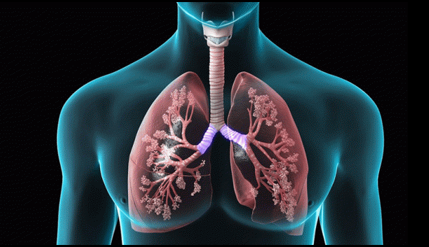

COPD (chronic obstructive pulmonary disease)

CAUSES
Most people with COPD are at least 40 years old and have at least some history of smoking. The longer and more tobacco products you smoke, the greater your risk of COPD is.
In addition to cigarette smoke, cigar smoke, pipe smoke, and secondhand smoke can cause COPD. Your risk of COPD is even greater if you have asthma and smoke.
SYMPTOMS
Symptoms include:
- occasional shortness of breath, especially after exercise
-
mild but recurrent cough
-
needing to clear your throat often, especially first thing in the morning
DIAGNOSIS
During the physical exam, your doctor will use a stethoscope to listen to your lungs as you breathe. Based on all this information, your doctor may order some of these tests to get a more complete picture:
- Spirometry is a noninvasive test to assess lung function. During the test, you’ll take a deep breath and then blow into a tube connected to the spirometer.
-
Imaging tests, like a chest X-ray or CT scan. These images can provide a detailed look at your lungs, blood vessels, and heart.
-
An arterial blood gas test. This involves taking a blood sample from an artery to measure your blood oxygen, carbon dioxide, and other important levels.
TREATMENTS
Treatment can ease symptoms, prevent complications, and generally slow disease progression. Your healthcare team may include a lung specialist (pulmonologist) and physical and respiratory therapists.